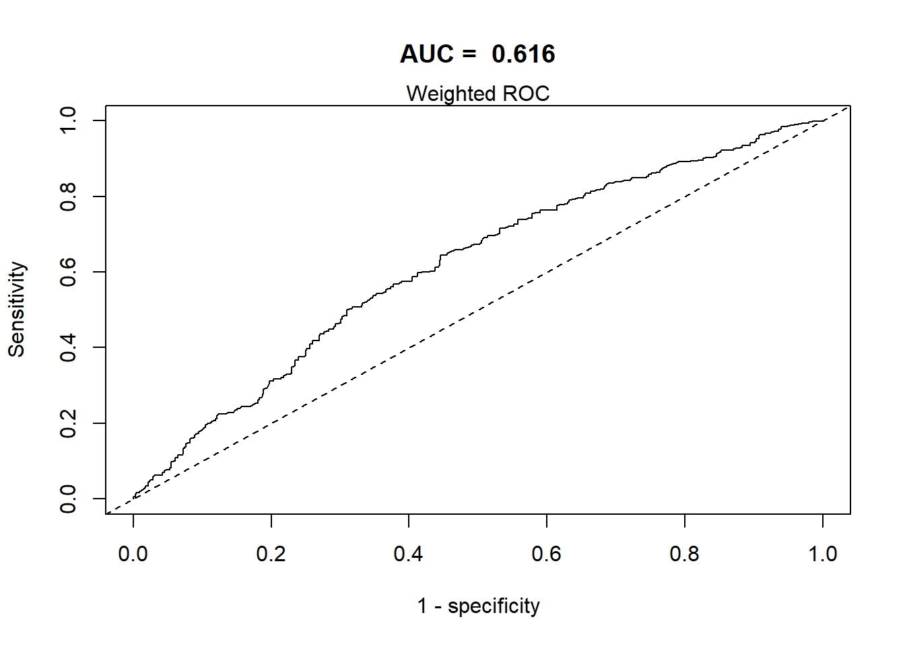

NHANES: Cholesterol
Preprocessing
Analytic data set
We will use cholesterolNHANES15part1.RData in this prediction goal question (predicting cholesterol in adults).
For this exercise, we are assuming that:
outcome: cholesterol
-
predictors:
- gender
- whether born in US
- race
- education
- whether married
- income level
- BMI
- whether has diabetes
-
survey features:
- survey weights
- strata
- cluster/PSU; where strata is nested within clusters
– restrict to those participants who are of 18 years of age or older
Show the code
load("Data/surveydata/cholesterolNHANES15part1.rdata") #Loading the dataset
ls()
#> [1] "analytic" "analytic.with.miss" "analytic1"
#> [4] "analytic2" "analytic2b" "analytic3"
#> [7] "collinearity" "correlationMatrix" "diff.boot"
#> [10] "extract.boot.fun" "extract.fit" "extract.lm.fun"
#> [13] "fictitious.data" "fit0" "fit1"
#> [16] "fit2" "fit3" "fit4"
#> [19] "fit5" "formula0" "formula1"
#> [22] "formula2" "formula3" "formula4"
#> [25] "formula5" "k.folds" "numeric.names"
#> [28] "perform" "pred.y" "rocobj"
#> [31] "sel.names" "var.cluster" "var.summ"
#> [34] "var.summ2"Retaining only useful variables
Show the code
# Data dimensions
dim(analytic)
#> [1] 1267 33
# Variable names
names(analytic)
#> [1] "ID" "gender" "age"
#> [4] "born" "race" "education"
#> [7] "married" "income" "weight"
#> [10] "psu" "strata" "diastolicBP"
#> [13] "systolicBP" "bodyweight" "bodyheight"
#> [16] "bmi" "waist" "smoke"
#> [19] "alcohol" "cholesterol" "cholesterolM2"
#> [22] "triglycerides" "uric.acid" "protein"
#> [25] "bilirubin" "phosphorus" "sodium"
#> [28] "potassium" "globulin" "calcium"
#> [31] "physical.work" "physical.recreational" "diabetes"
#Subsetting dataset with variables needed:
require(dplyr)
anadata <- select(analytic,
cholesterol, #outcome
gender, age, born, race, education, married, income, bmi, diabetes, #predictors
weight, psu, strata) #survey features
# new data sizes
dim(anadata)
#> [1] 1267 13
# retained variable names
names(anadata)
#> [1] "cholesterol" "gender" "age" "born" "race"
#> [6] "education" "married" "income" "bmi" "diabetes"
#> [11] "weight" "psu" "strata"
#Restricting to participants who are 18 or older
summary(anadata$age) #The age range is already 20-80
#> Min. 1st Qu. Median Mean 3rd Qu. Max.
#> 20.00 36.00 51.00 49.91 63.00 80.00
#Recoding the born variable
table(anadata$born, useNA = "always")
#>
#> Born in 50 US states or Washingt Others
#> 991 276
#> <NA>
#> 0
levels(anadata$born)
#> NULL
anadata$born <- car::recode(anadata$born,
"'Born in 50 US states or Washingt' = 'Born.in.US';
'Others' = 'Others';
else=NA")
table(anadata$born, useNA = "always")
#>
#> Born.in.US Others <NA>
#> 991 276 0Checking the data for missing
Preparing factor and continuous variables appropriately
Show the code
vars = c("cholesterol", "gender", "born", "race", "education",
"married", "income", "bmi", "diabetes")
numeric.names <- c("cholesterol", "bmi")
factor.names <- vars[!vars %in% numeric.names]
anadata[factor.names] <- apply(X = anadata[factor.names],
MARGIN = 2, FUN = as.factor)
anadata[numeric.names] <- apply(X = anadata[numeric.names],
MARGIN = 2, FUN =function (x)
as.numeric(as.character(x)))Table 1
Show the code
library(tableone)
tab1 <- CreateTableOne(data = anadata, includeNA = TRUE, vars = vars)
print(tab1, showAllLevels = TRUE, varLabels = TRUE)
#>
#> level Overall
#> n 1267
#> cholesterol (mean (SD)) 193.10 (43.22)
#> gender (%) Female 496 (39.1)
#> Male 771 (60.9)
#> born (%) Born.in.US 991 (78.2)
#> Others 276 (21.8)
#> race (%) Black 246 (19.4)
#> Hispanic 337 (26.6)
#> Other 132 (10.4)
#> White 552 (43.6)
#> education (%) College 648 (51.1)
#> High.School 523 (41.3)
#> School 96 ( 7.6)
#> married (%) Married 751 (59.3)
#> Never.married 226 (17.8)
#> Previously.married 290 (22.9)
#> income (%) <25k 344 (27.2)
#> Between.25kto54k 435 (34.3)
#> Between.55kto99k 297 (23.4)
#> Over100k 191 (15.1)
#> bmi (mean (SD)) 29.58 (6.84)
#> diabetes (%) No 1064 (84.0)
#> Yes 203 (16.0)Linear regression when cholesterol is continuous
Fit a linear regression, and report the VIFs.
Show the code
#Fitting initial regression
fit0 <- lm(cholesterol ~ gender + born + race + education +
married + income + bmi + diabetes,
data = anadata)
library(Publish)
publish(fit0)
#> Variable Units Coefficient CI.95 p-value
#> (Intercept) 198.90 [184.82;212.97] < 1e-04
#> gender Female Ref
#> Male -6.82 [-11.76;-1.89] 0.006854
#> born Born.in.US Ref
#> Others 15.65 [8.54;22.75] < 1e-04
#> race Black Ref
#> Hispanic -2.75 [-10.61;5.10] 0.492333
#> Other -3.95 [-13.61;5.72] 0.423740
#> White 5.36 [-1.20;11.92] 0.109403
#> education College Ref
#> High.School 3.51 [-1.61;8.63] 0.179871
#> School 0.31 [-9.63;10.24] 0.951841
#> married Married Ref
#> Never.married -11.05 [-17.67;-4.44] 0.001082
#> Previously.married 4.72 [-1.43;10.86] 0.132468
#> income <25k Ref
#> Between.25kto54k -0.48 [-6.72;5.75] 0.879480
#> Between.55kto99k 3.41 [-3.60;10.43] 0.340491
#> Over100k 2.24 [-6.02;10.51] 0.595131
#> bmi -0.21 [-0.56;0.15] 0.257105
#> diabetes No Ref
#> Yes -10.61 [-17.21;-4.02] 0.001652
#Checking VIFs
car::vif(fit0)
#> GVIF Df GVIF^(1/(2*Df))
#> gender 1.065810 1 1.032381
#> born 1.578258 1 1.256288
#> race 1.684064 3 1.090753
#> education 1.280113 2 1.063683
#> married 1.225520 2 1.052156
#> income 1.277005 3 1.041595
#> bmi 1.086953 1 1.042570
#> diabetes 1.073619 1 1.036156All VIFs are small.
Test of association when cholesterol is binary
Dichotomize the outcome such that cholesterol<200 is labeled as ‘healthy’; otherwise label it as ‘unhealthy’, and name it ‘cholesterol.bin’. Test the association between this binary variable and gender.
Show the code
#Creating binary variable for cholesterol
anadata$cholesterol.bin <- ifelse(anadata$cholesterol <200, "healthy", "unhealthy")
#If cholesterol is <200, then "healthy", if not, "unhealthy"
table(anadata$cholesterol.bin)
#>
#> healthy unhealthy
#> 738 529
anadata$cholesterol.bin <- as.factor(anadata$cholesterol.bin)
anadata$cholesterol.bin <- relevel(anadata$cholesterol.bin, ref = "unhealthy")Test of association between cholesterol and gender (no survey features)
Setting up survey design
Show the code
require(survey)
summary(anadata$weight)
#> Min. 1st Qu. Median Mean 3rd Qu. Max.
#> 5470 19540 30335 48904 63822 224892
w.design <- svydesign(id = ~psu, weights = ~weight, strata = ~strata,
nest = TRUE, data = anadata)
summary(weights(w.design))
#> Min. 1st Qu. Median Mean 3rd Qu. Max.
#> 5470 19540 30335 48904 63822 224892Test of association accounting for survey design
Show the code
#Rao-Scott modifications (chi-sq)
svychisq(~cholesterol.bin + gender, design = w.design, statistic = "Chisq")
#>
#> Pearson's X^2: Rao & Scott adjustment
#>
#> data: svychisq(~cholesterol.bin + gender, design = w.design, statistic = "Chisq")
#> X-squared = 11.092, df = 1, p-value = 0.02365
#Thomas-Rao modifications (F)
svychisq(~cholesterol.bin + gender, design = w.design, statistic = "F")
#>
#> Pearson's X^2: Rao & Scott adjustment
#>
#> data: svychisq(~cholesterol.bin + gender, design = w.design, statistic = "F")
#> F = 5.1205, ndf = 1, ddf = 15, p-value = 0.03891All three tests indicate strong evidence to reject the H0. There seems to be an association between gender and cholesterol level (healthy/unhealthy)
Table 1
Create a Table 1 (summarizing the covariates) stratified by the binary outcome: cholesterol.bin, utilizing the above survey features.
Show the code
# Creating Table 1 stratified by binary outcome (cholesterol)
# Using the survey features
vars2 = c("gender", "born", "race", "education",
"married", "income", "bmi", "diabetes")
kableone <- function(x, ...) {
capture.output(x <- print(x, showAllLevels= TRUE, padColnames = TRUE, insertLevel = TRUE))
knitr::kable(x, ...)
}
kableone(svyCreateTableOne(var = vars2, strata= "cholesterol.bin", data=w.design, test = TRUE)) | level | unhealthy | healthy | p | test | |
|---|---|---|---|---|---|
| n | 27369732.3 | 34591444.0 | |||
| gender (%) | Female | 13573865.5 (49.6) | 13917447.5 (40.2) | 0.039 | |
| Male | 13795866.8 (50.4) | 20673996.5 (59.8) | |||
| born (%) | Born.in.US | 23772751.7 (86.9) | 31532673.3 (91.2) | 0.028 | |
| Others | 3596980.6 (13.1) | 3058770.7 ( 8.8) | |||
| race (%) | Black | 1832118.3 ( 6.7) | 3696893.4 (10.7) | 0.015 | |
| Hispanic | 3263992.3 (11.9) | 3921344.6 (11.3) | |||
| Other | 1887156.6 ( 6.9) | 2601870.3 ( 7.5) | |||
| White | 20386465.2 (74.5) | 24371335.7 (70.5) | |||
| education (%) | College | 15855712.5 (57.9) | 20945710.7 (60.6) | 0.522 | |
| High.School | 10615218.7 (38.8) | 12434827.2 (35.9) | |||
| School | 898801.1 ( 3.3) | 1210906.1 ( 3.5) | |||
| married (%) | Married | 17489306.2 (63.9) | 21170020.0 (61.2) | 0.005 | |
| Never.married | 3086474.4 (11.3) | 7175237.2 (20.7) | |||
| Previously.married | 6793951.8 (24.8) | 6246186.8 (18.1) | |||
| income (%) | <25k | 4760281.8 (17.4) | 6364208.6 (18.4) | 0.915 | |
| Between.25kto54k | 8682481.6 (31.7) | 10786198.6 (31.2) | |||
| Between.55kto99k | 6939847.0 (25.4) | 9190388.2 (26.6) | |||
| Over100k | 6987121.9 (25.5) | 8250648.6 (23.9) | |||
| bmi (mean (SD)) | 29.35 (6.13) | 29.64 (7.05) | 0.593 | ||
| diabetes (%) | No | 25080412.0 (91.6) | 30006523.6 (86.7) | 0.012 | |
| Yes | 2289320.3 ( 8.4) | 4584920.4 (13.3) |
Logistic regression model
Run a logistic regression model using the same variables, utilizing the survey features. Report the corresponding odds ratios and the 95% confidence intervals.
Show the code
formula1 <- as.formula(I(cholesterol.bin=="unhealthy") ~ gender + born +
race + education + married + income + bmi +
diabetes)
fit1 <- svyglm(formula1,
design = w.design,
family = binomial(link = "logit"))
publish(fit1)
#> Variable Units OddsRatio CI.95 p-value
#> gender Female Ref
#> Male 0.70 [0.49;0.98] 0.2866
#> born Born.in.US Ref
#> Others 2.10 [1.41;3.13] 0.1707
#> race Black Ref
#> Hispanic 1.15 [0.80;1.67] 0.5871
#> Other 1.11 [0.69;1.80] 0.7406
#> White 1.46 [1.00;2.14] 0.3003
#> education College Ref
#> High.School 1.21 [0.96;1.52] 0.3563
#> School 0.86 [0.52;1.43] 0.6712
#> married Married Ref
#> Never.married 0.54 [0.32;0.90] 0.2526
#> Previously.married 1.31 [0.92;1.87] 0.3704
#> income <25k Ref
#> Between.25kto54k 1.03 [0.61;1.73] 0.9408
#> Between.55kto99k 1.02 [0.66;1.56] 0.9525
#> Over100k 1.12 [0.73;1.72] 0.6920
#> bmi 1.00 [0.97;1.03] 0.9361
#> diabetes No Ref
#> Yes 0.62 [0.41;0.95] 0.2720Wald test (survey version)
Perform a Wald test (survey version) to test the null hypothesis that all coefficients associated with the income variable are zero, and interpret.
The Wald test here gives a large p-value; We do not have evidence to reject the H0 of coefficient being 0. If the coefficient for income variable is 0, this means that the outcome in the model (cholesterol) is not affected by income. This suggests that removing income from the model does not statistically improve the model fit. So we can remove income variable from the model.
Backward elimination
Run a backward elimination (using the AIC criteria) on the above logistic regression fit (keeping important variables gender, race, bmi, diabetes in the model), and report the odds ratios and the 95% confidence intervals from the resulting final logistic regression fit.
Show the code
#Running backward elimination based on AIC
require(MASS)
scope <- list(upper = ~ gender + born + race + education +
married + income + bmi + diabetes,
lower = ~ gender + race + bmi + diabetes)
fit3 <- step(fit1, scope = scope, trace = FALSE,
k = 2, direction = "backward")
#Odds Ratios
publish(fit3)
#> Variable Units OddsRatio CI.95 p-value
#> gender Female Ref
#> Male 0.71 [0.51;0.98] 0.08558
#> born Born.in.US Ref
#> Others 2.01 [1.37;2.96] 0.01184
#> race Black Ref
#> Hispanic 1.15 [0.81;1.65] 0.46785
#> Other 1.11 [0.68;1.81] 0.69539
#> White 1.46 [0.99;2.17] 0.10469
#> married Married Ref
#> Never.married 0.54 [0.32;0.90] 0.05770
#> Previously.married 1.30 [0.93;1.80] 0.17125
#> bmi 1.00 [0.97;1.03] 0.95146
#> diabetes No Ref
#> Yes 0.61 [0.40;0.91] 0.05445Born and married are also found to be useful on top of gender + race + bmi + diabetes.
Interaction terms
Checking interaction terms
– gender and whether married
– gender and whether born in the US
– gender and diabetes
– whether married and diabetes
Show the code
#gender and married
fit4 <- update(fit3, .~. + interaction(gender, married))
anova(fit3, fit4)
#> Working (Rao-Scott+F) LRT for interaction(gender, married)
#> in svyglm(formula = I(cholesterol.bin == "unhealthy") ~ gender +
#> born + race + married + bmi + diabetes + interaction(gender,
#> married), design = w.design, family = binomial(link = "logit"))
#> Working 2logLR = 0.7461308 p= 0.70903
#> (scale factors: 1.1 0.93 ); denominator df= 4Do not include interaction term
Show the code
#gender and born in us
fit5 <- update(fit3, .~. + interaction(gender, born))
anova(fit3, fit5)
#> Working (Rao-Scott+F) LRT for interaction(gender, born)
#> in svyglm(formula = I(cholesterol.bin == "unhealthy") ~ gender +
#> born + race + married + bmi + diabetes + interaction(gender,
#> born), design = w.design, family = binomial(link = "logit"))
#> Working 2logLR = 0.4635299 p= 0.52441
#> df=1; denominator df= 5Do not include interaction term
Show the code
#gender and diabetes
fit6 <- update(fit3, .~. + interaction(gender, diabetes))
anova(fit3, fit6)
#> Working (Rao-Scott+F) LRT for interaction(gender, diabetes)
#> in svyglm(formula = I(cholesterol.bin == "unhealthy") ~ gender +
#> born + race + married + bmi + diabetes + interaction(gender,
#> diabetes), design = w.design, family = binomial(link = "logit"))
#> Working 2logLR = 1.222596 p= 0.32211
#> df=1; denominator df= 5Do not include interaction term
Show the code
#married and diabetes
fit7 <- update(fit3, .~. + interaction(married, diabetes))
anova(fit3, fit7)
#> Working (Rao-Scott+F) LRT for interaction(married, diabetes)
#> in svyglm(formula = I(cholesterol.bin == "unhealthy") ~ gender +
#> born + race + married + bmi + diabetes + interaction(married,
#> diabetes), design = w.design, family = binomial(link = "logit"))
#> Working 2logLR = 0.3207507 p= 0.84547
#> (scale factors: 1.4 0.62 ); denominator df= 4Do not include interaction term
None of the interaction terms are improving the model fit.
AUC
Report AUC of the final model (only using weight argument) and interpret.
AUC of the final model (only using weight argument) and interpret
Show the code
require(ROCR)
# WeightedROC may not be on cran for all R versions
# devtools::install_github("tdhock/WeightedROC")
library(WeightedROC)
svyROCw <- function(fit = fit3, outcome = anadata$cholesterol.bin == "unhealthy", weight = anadata$weight){
if (is.null(weight)){ # require(ROCR)
prob <- predict(fit, type = "response")
pred <- prediction(as.vector(prob), outcome)
perf <- performance(pred, "tpr", "fpr")
auc <- performance(pred, measure = "auc")
auc <- auc@y.values[[1]]
roc.data <- data.frame(fpr = unlist(perf@x.values), tpr = unlist(perf@y.values),
model = "Logistic")
with(data = roc.data,plot(fpr, tpr, type="l", xlim=c(0,1), ylim=c(0,1), lwd=1,
xlab="1 - specificity", ylab="Sensitivity",
main = paste("AUC = ", round(auc,3))))
mtext("Unweighted ROC")
abline(0,1, lty=2)
} else {
outcome <- as.numeric(outcome)
pred <- predict(fit, type = "response")
tp.fp <- WeightedROC(pred, outcome, weight)
auc <- WeightedAUC(tp.fp)
with(data = tp.fp,plot(FPR, TPR, type="l", xlim=c(0,1), ylim=c(0,1), lwd=1,
xlab="1 - specificity", ylab="Sensitivity",
main = paste("AUC = ", round(auc,3))))
abline(0,1, lty=2)
mtext("Weighted ROC")
}
}
svyROCw(fit = fit3, outcome = anadata$cholesterol.bin == "unhealthy", weight = anadata$weight)
The area under the curve in the final model is 0.611, using the survey weighted ROC. The AUC of 0.611 indicates that this model has poor discrimination.
Archer-Lemeshow Goodness of fit
Report Archer-Lemeshow Goodness of fit test and interpret (utilizing all the survey features).
Show the code
#Archer-Lemeshow Goodness of fit test utilizing all survey features
AL.gof2 <- function(fit = fit3, data = anadata,
weight = "weight", psu = "psu", strata = "strata"){
r <- residuals(fit, type = "response")
f<-fitted(fit)
breaks.g <- c(-Inf, quantile(f, (1:9)/10), Inf)
breaks.g <- breaks.g + seq_along(breaks.g) * .Machine$double.eps
g<- cut(f, breaks.g)
data2g <- cbind(data,r,g)
newdesign <- svydesign(id=as.formula(paste0("~",psu)),
strata=as.formula(paste0("~",strata)),
weights=as.formula(paste0("~",weight)),
data=data2g, nest = TRUE)
decilemodel <- svyglm(r~g, design=newdesign)
res <- regTermTest(decilemodel, ~g)
return(res)
}
AL.gof2(fit3, anadata, weight = "weight", psu = "psu", strata = "strata")
#> Wald test for g
#> in svyglm(formula = r ~ g, design = newdesign)
#> F = 0.7569326 on 9 and 6 df: p= 0.66075Archer and Lemeshow GoF test was used to test the fit of this model. The p-value of 0.3043, which is greater than 0.05. This means that there is no evidence of lack of fit to this model.
Add age as a predictor for linear regression
Fit another logistic regression (similar to Q1) with the above-mentioned predictors (as obtained in Q7) and age, utilizing the survey features. What difference do you see from the previous fit results?
Show the code
aic.int.model <- eval(fit3$call[[2]])
aic.int.model
#> I(cholesterol.bin == "unhealthy") ~ gender + born + race + married +
#> bmi + diabetes
formula3 <- as.formula(cholesterol.bin ~ gender + born + race + married + bmi + diabetes + age)
fit9 <- svyglm(formula3,
design = w.design,
family = binomial(link="logit"))
summary(fit9)
#>
#> Call:
#> svyglm(formula = formula3, design = w.design, family = binomial(link = "logit"))
#>
#> Survey design:
#> svydesign(id = ~psu, weights = ~weight, strata = ~strata, nest = TRUE,
#> data = anadata)
#>
#> Coefficients:
#> Estimate Std. Error t value Pr(>|t|)
#> (Intercept) 1.0657919 0.6260889 1.702 0.1494
#> genderMale 0.3821902 0.1703394 2.244 0.0749 .
#> bornOthers -0.6912102 0.2026407 -3.411 0.0190 *
#> raceHispanic -0.2442019 0.1823190 -1.339 0.2381
#> raceOther -0.1570271 0.2306208 -0.681 0.5262
#> raceWhite -0.3638735 0.2029676 -1.793 0.1330
#> marriedNever.married 0.4029107 0.2637962 1.527 0.1872
#> marriedPreviously.married -0.2096009 0.1620478 -1.293 0.2524
#> bmi -0.0002237 0.0134117 -0.017 0.9873
#> diabetesYes 0.6534019 0.2456333 2.660 0.0449 *
#> age -0.0151364 0.0042038 -3.601 0.0155 *
#> ---
#> Signif. codes: 0 '***' 0.001 '**' 0.01 '*' 0.05 '.' 0.1 ' ' 1
#>
#> (Dispersion parameter for binomial family taken to be 1.000456)
#>
#> Number of Fisher Scoring iterations: 4
publish(fit9)
#> Variable Units OddsRatio CI.95 p-value
#> gender Female Ref
#> Male 1.47 [1.05;2.05] 0.07487
#> born Born.in.US Ref
#> Others 0.50 [0.34;0.75] 0.01902
#> race Black Ref
#> Hispanic 0.78 [0.55;1.12] 0.23809
#> Other 0.85 [0.54;1.34] 0.52619
#> White 0.69 [0.47;1.03] 0.13299
#> married Married Ref
#> Never.married 1.50 [0.89;2.51] 0.18721
#> Previously.married 0.81 [0.59;1.11] 0.25238
#> bmi 1.00 [0.97;1.03] 0.98734
#> diabetes No Ref
#> Yes 1.92 [1.19;3.11] 0.04488
#> age 0.98 [0.98;0.99] 0.01553Comparing with previous model fit
Show the code
publish(fit3)
#> Variable Units OddsRatio CI.95 p-value
#> gender Female Ref
#> Male 0.71 [0.51;0.98] 0.08558
#> born Born.in.US Ref
#> Others 2.01 [1.37;2.96] 0.01184
#> race Black Ref
#> Hispanic 1.15 [0.81;1.65] 0.46785
#> Other 1.11 [0.68;1.81] 0.69539
#> White 1.46 [0.99;2.17] 0.10469
#> married Married Ref
#> Never.married 0.54 [0.32;0.90] 0.05770
#> Previously.married 1.30 [0.93;1.80] 0.17125
#> bmi 1.00 [0.97;1.03] 0.95146
#> diabetes No Ref
#> Yes 0.61 [0.40;0.91] 0.05445
publish(fit9)
#> Variable Units OddsRatio CI.95 p-value
#> gender Female Ref
#> Male 1.47 [1.05;2.05] 0.07487
#> born Born.in.US Ref
#> Others 0.50 [0.34;0.75] 0.01902
#> race Black Ref
#> Hispanic 0.78 [0.55;1.12] 0.23809
#> Other 0.85 [0.54;1.34] 0.52619
#> White 0.69 [0.47;1.03] 0.13299
#> married Married Ref
#> Never.married 1.50 [0.89;2.51] 0.18721
#> Previously.married 0.81 [0.59;1.11] 0.25238
#> bmi 1.00 [0.97;1.03] 0.98734
#> diabetes No Ref
#> Yes 1.92 [1.19;3.11] 0.04488
#> age 0.98 [0.98;0.99] 0.01553
AIC(fit3)
#> eff.p AIC deltabar
#> 11.121795 1706.792543 1.235755
AIC(fit9)
#> eff.p AIC deltabar
#> 12.14310 1694.15974 1.21431Video content (optional)
For those who prefer a video walkthrough, feel free to watch the video below, which offers a description of an earlier version of the above content.